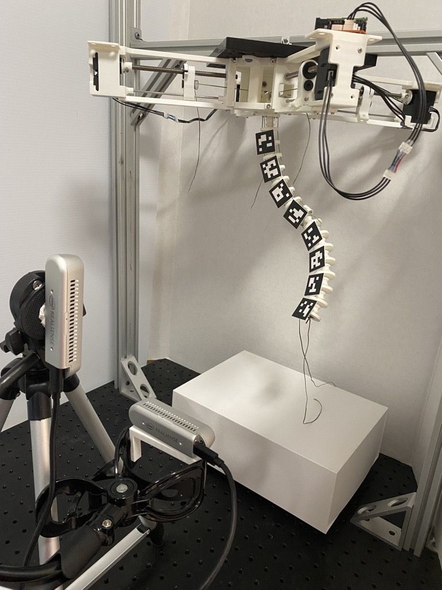
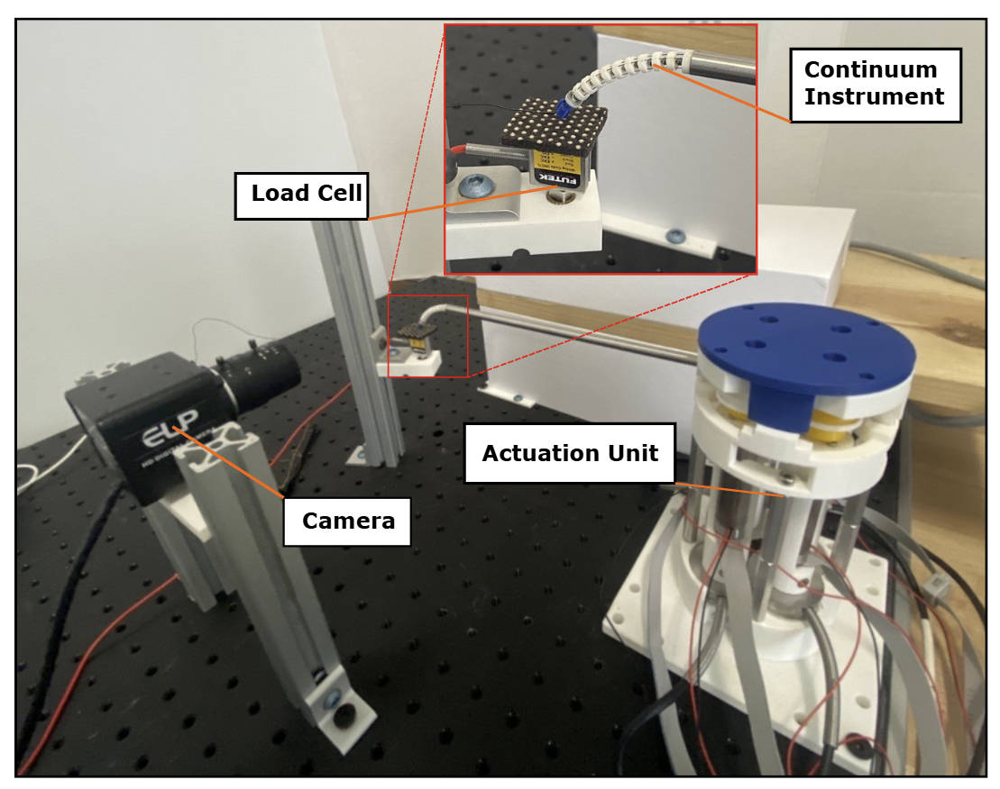
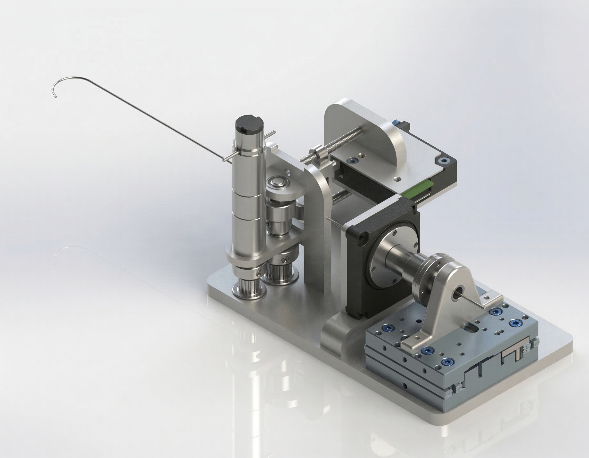
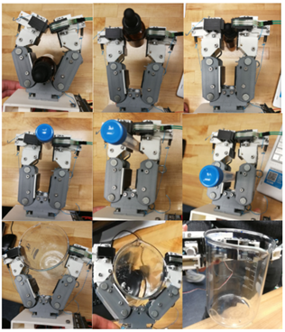
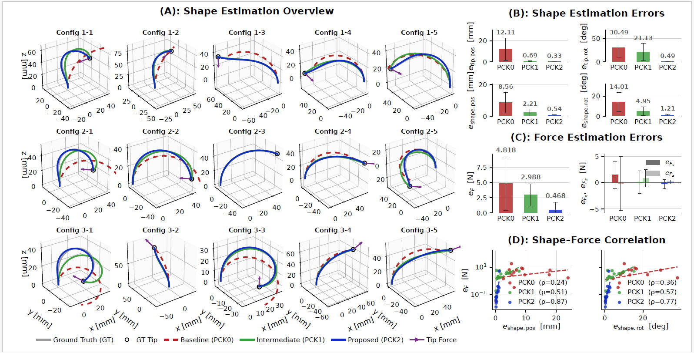

Wrapping up Ph.D. research on continuum robot shape, force, and wrench estimation with real-time validation on custom mechatronics platforms.
Now
Looking for robotics controls and systems roles where modeling, estimation, software, and hardware integration all matter.
Advancing accepted IEEE/ASME TMECH/AIM Focused Section work and preparing the next SE(3)-based shape-wrench estimation manuscript.
About Me
I am a robotics controls and systems engineer with a Ph.D. in Mechanical Engineering and 5+ years of experience building and validating continuum and medical robotic systems. I have contributed to R&D tooling and experimental robotics platforms with Johnson & Johnson and Auris Health, working across C++, Python, MATLAB/Simulink, ROS2, Simulink Real-Time, Speedgoat, EtherCAT, and hardware/software integration.
My doctoral research at Stevens Institute of Technology focused on state estimation algorithms that allow continuum robots to estimate shape, interaction forces, and external wrenches in real time, combining sensing, mechanics, and geometric modeling into systems that can run on physical hardware.
I enjoy building across the full robotics stack: CAD and mechatronics design, sensing architecture, estimation and controls, embedded I/O, software tooling, and experimental validation on benchtop and real-time test platforms.
Research Platforms & Robotics Builds
A more visual look at the kinds of systems I build: instrumented continuum robot platforms, force-sensing mechatronics rigs, and compact robotic devices developed through research and side projects.

Ph.D. Research Platform 01
Continuum Robot Shape Estimation Testbed
A modular hardware platform for validating adaptive shape estimation with distributed sensing, cable actuation, and repeatable bench-top experiments.

Ph.D. Research Platform 02
Integrated Shape-Force Mechatronics Rig
A hardware platform combining cable-driven actuation, inline torque sensing, and real-time data acquisition for concurrent shape and force estimation.

Side / Course Project
Robotic Guidewire Driving System
Concept work around a compact drive module for controlled guidewire feed and rotation, focused on precision transmission and operator-safe mechanical packaging.

Team Course Project | Columbia University
Laboratory Assistive Hand (LAH)
Team-built a tendon-driven, underactuated assistive hand for remote laboratory handling and titration. The design used a single actuator to coordinate two fingers, spring-biased tendon routing, and distal sliders for both stable grasping and controlled dropper squeezing.
GraspIt! grasp quality improved from 0.074 to 0.145 across design iterations
Validated 80% dropper, 90% test tube, and 80% beaker grasp success over 20 trials
Integrated FSR sensing, Arduino servo control, and Baxter-assisted titration demo
Technical Skills
Programming
- C++ and object-oriented software design
- Python for tooling, analysis, and automation
- MATLAB and Simulink
- Git, Linux, and research software workflows
Robotics & Controls
- ROS and ROS2
- Motion-control analysis and system identification
- EKF and IMM-based state estimation
- Sensor fusion, kinematics, statics, and dynamics
- Continuum and cable-driven robot modeling
Real-Time & Verification
- Simulink Real-Time
- Speedgoat deployment and logging
- EtherCAT communication
- 1 kHz logging, algorithm validation, and hardware-in-the-loop testing
Hardware & Design
- SolidWorks CAD
- Motor and servo integration
- EM, IMU, vision, tension, and torque sensing
- Embedded I/O and electromechanical prototyping
- Actuation packaging and bench-top validation
Featured Projects & Experience
Johnson & Johnson | Ottava Surgical Robotics Program
Continuum Instrument State Observer Development
Oct 2021 - May 2022
Developed real-time state estimation systems for a 7-DOF flexible surgical instrument with cable-driven bending, insertion, and roll. Built configuration-space Extended Kalman Filter observers to estimate instrument pose from multi-sensor fusion and support prototype motion-fidelity evaluation.
- Derived continuum-instrument kinematics and geometric Jacobians for a cable-driven wrist
- Implemented an EKF observer with analytic measurement Jacobians and OptiTrack fusion
- Built pose-error analysis using Gaussian position ellipsoids and Bingham quaternion statistics
- Developed ROS2 and RViz tooling for multi-sensor debugging and experimental validation
Performance: Less than 5 mm position error and less than 5 degrees
orientation error in typical cases, with worst-case behavior around 17 mm and 23 degrees.
Auris Health | Johnson & Johnson
Real-Time Control Platform for Bronchoscopy Robot
May 2020 - Aug 2020
Built a Simulink Real-Time platform on Speedgoat hardware to accelerate control algorithm development for surgical robotics and integrate a distributed electromechanical hardware stack with deterministic timing.
- Built a workflow with automatic C code generation, online tuning, and 1 kHz logging
- Integrated EM tracker, torque cells, and Elmo servo drives over UDP and EtherCAT
- Implemented wire tensioning, initialization, and quintic trajectory planning features
- Performed motor system identification using chirp excitation and frequency response analysis
Impact: Reduced control iteration time from days to hours while enabling
1 kHz real-time execution across a multi-actuator platform.
Stevens Institute of Technology | Ph.D. Research
Adaptive Shape Estimation for Continuum Robots
2022 - 2026
Developed stochastic shape estimation algorithms in a polynomial-curvature state space with adaptive multi-model filtering for robustness under sparse, noisy sensing.
- Implemented IMM-EKF estimation across varying deformation regimes
- Built real-time estimation stacks on ROS2 and Python
- Designed validation around camera/ArUco feedback, IMUs, cable tension, and load-cell references
- Released reusable ROS2 estimation packages used across the lab
Accuracy: 0.38 percent tip position error, 0.24 percent shape position
error, and 0.63 degrees per 100 mm tip bending.

Modular testbed used to connect sensing, estimation, and repeatable hardware experiments.
Stevens Institute of Technology | Ph.D. Research
Integrated Shape-Force Estimation Framework
2022 - 2026
Developed a two-stage curvature-space framework that fuses cable tensions with tip-pose sensing to estimate both continuum robot shape and distal interaction forces.
- Derived a virtual-work static formulation directly in polynomial-curvature coordinates for shape-to-wrench inference
- Combined tip-pose sensing with cable tensions using a compact weighted least-squares redundancy formulation
- Built a torque-cell-enabled cable-driven continuum robot platform for synchronized hardware validation
- Demonstrated a lightweight pipeline with closed-form, iteration-free force estimation and experimental validation
- Accepted as a first-author IEEE/ASME TMECH/AIM Focused Section paper, with associated AIM presentation
Accuracy: In simulation, second-order polynomial curvature achieved
0.33 mm tip-position MAE, 0.54 mm arc-length-averaged shape-position MAE,
and 0.468 N force-estimation error.

Custom mechatronics platform with cable routing, inline sensing, and synchronized data capture.
Selected Publications
Stochastic Adaptive Estimation in Polynomial Curvature Shape State Space for Continuum Robots
IEEE Transactions on Robotics, 2026, doi: 10.1109/TRO.2025.3637147
Published
Integrated Shape-Force Estimation for Continuum Robots: A Virtual-Work and Polynomial-Curvature Framework
IEEE/ASME Transactions on Mechatronics, TMECH/AIM Focused Section, accepted, 2026; to be presented at IEEE/ASME AIM
Accepted / AIM
Recursive Shape Estimation and External Wrench Inference for Continuum Robots: An SE(3)-Based Reduced-Order Modal Framework
IEEE Transactions on Robotics
In Preparation
A Modular Continuum Manipulator for Aerial Manipulation and Perching
ASME IDETC 2022
Published